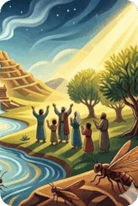
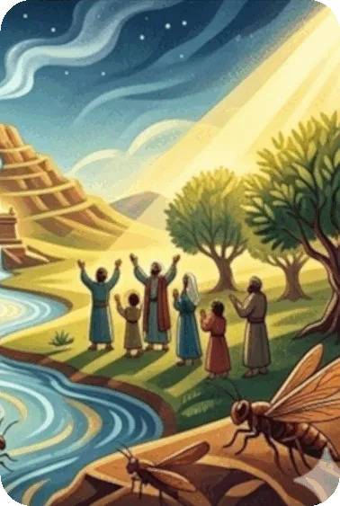

A terrible plague of locusts is followed by a severe famine throughout the land. Joel uses these happenings as the catalyst to send words of warning to Judah. Unless the people repent quickly and completely, enemy armies will devour the land as did the natural elements. Joel appeals to all the people and the priests of the land to fast and humble themselves as they seek God’s forgiveness. If they will respond, there will be renewed material and spiritual blessings for the nation. But the Day of the Lord is coming. At this time the dreaded locusts will seem as gnats in comparison, as all nations receive His judgment.
The overriding theme of the Book of Joel is the Day of the Lord, a day of God’s wrath and judgment. This is the Day in which God reveals His attributes of wrath, power, and holiness, and it is a terrifying day to His enemies.
In the first chapter, the Day of the Lord is experienced historically by the plague of locusts upon the land. Chapter 2 : 1 – 17 is a transitional chapter in which Joel uses the metaphor of the locust plague and drought to renew a call to repentance. Chapters 2 : 18 – 3 : 21 describes the Day of the Lord in eschatological terms and answers the call to repentance with prophecies of physical restoration (2 : 21 – 27), spiritual restoration (2 : 28 – 32), and national restoration (3 : 1 – 21).
Summary of the Book of Joel from GotQuestions.org — is a popular Christian website and "parachurch" ministry that provides answers to a vast array of questions about the Bible, theology, and spiritual life.
Do you have a question? Submit your Bible Questions to GotQuestions.org No need to sign up, just use your email to receive notifications from any answers. Also browse their website for many questions that may answer your questions.
For personal questions, always pray first to God and seek answers through deep prayers. That may answer deep questions in your heart, and mind, as only God, Holy Spirit and Jesus can see through and through on your feelings, thoughts and situation, better than any man can.